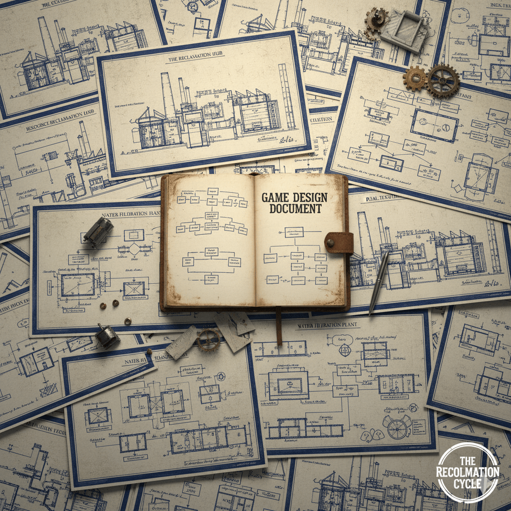

A Post-Apocalyptic Logistics & Restoration Simulation
The greatest challenge isn't surviving the collapse, but choosing the foundational principles—modern steel or sustainable wood—of the civilization you rebuild.
View README.md 📄 Explore Design Docs 💡 Join the Discussion 💬Decades after a world-ending event, humanity stands at a crossroads. Will you rebuild the remnants of the old world with its complex efficiency, or forge a new, sustainable future from local resources?
The stark choice: efficient but fragile old world technology vs. resilient, sustainable new world designs.
Focuses on restoring high-efficiency, dense **modern infrastructure** using salvaged components. This path promises rapid growth and automation but demands constant maintenance and relies on scarce, non-renewable specialized parts.
Emphasizes low-tech, self-sustaining structures using **local, renewable materials**. This path builds resilience and sustainability but often results in lower efficiency and population density.
At the heart of both paths is a deep, multi-tiered **recycling and upcycling mechanic**. Every piece of old-world junk, from a rusted rebar to a wrecked car, has potential. Disassemble, refine, and re-forge it into the materials needed for your chosen future.
Three distinct world-ending scenarios fundamentally alter resource availability, available threats, and logistical challenges, ensuring every playthrough is unique.
The struggle is against **Disease, Spores, and Tainted Resources**. Focus shifts to Sanitation, Filtration, and organized defense within sealed environments.
A world scarred by **Water Scarcity, Extreme Heat, and Dust**. Logistics must prioritize cooling, efficient irrigation, and resilient, insulated structures in familiar cityscapes.
All advanced electronics are dead, forever. Rebuild with **Mechanical Ingenuity, Steam Power, and Manual Labor**, where skilled craftspeople are the most valuable resource.
Dive deep into the mechanics, systems, and lore that drive The Reclamation Cycle. This project is built on transparent, detailed design documentation.
Explore the full Game Design Document Outline, detailed Tech Trees, and individual Scenario specifications directly on our GitHub repository.
Read the GDD Outline See the Tech Tree